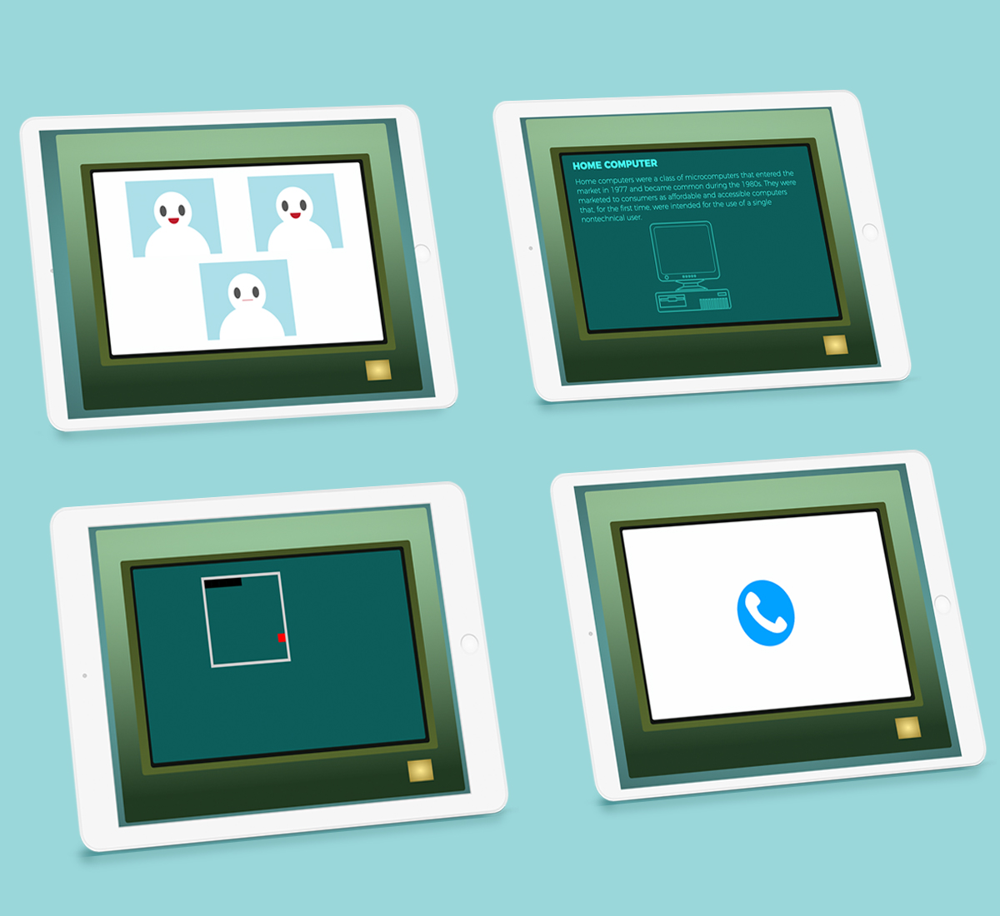
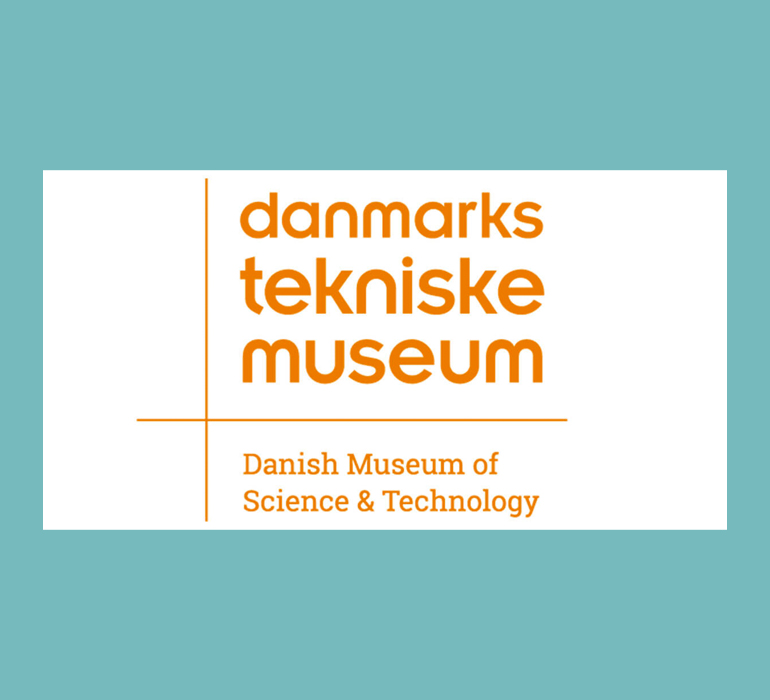
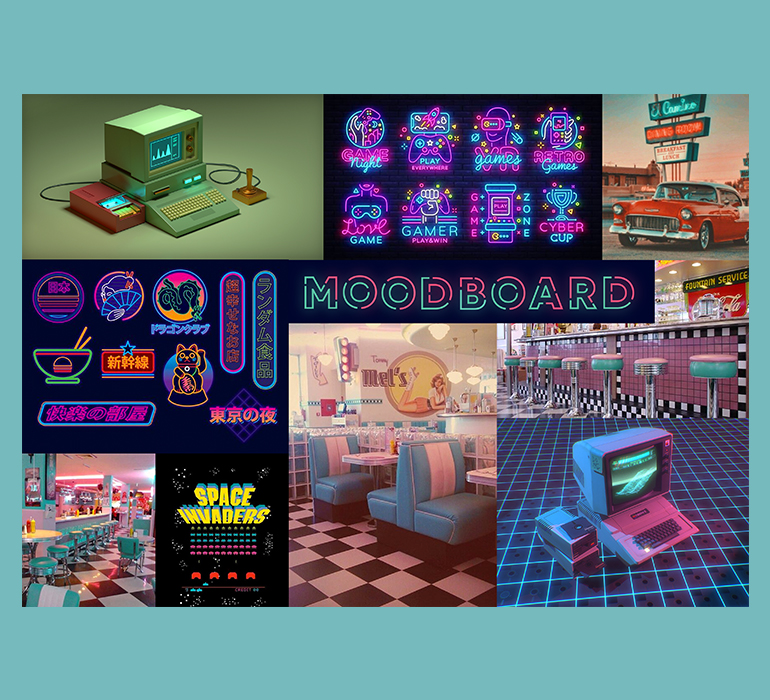
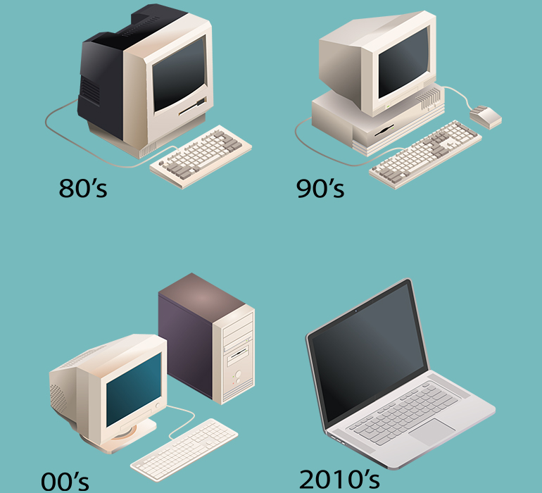

Web Prototype

SKILLS
HTML, CSS, JS
DESCRIPTION
This project was in collaboration with the Danish Museum of Science and Technology. The museum was having an exhibtion about inventions that had changed the world and the client wanted us to make an infoscreen that would inform the visitors about them.
Our group chose to do the home computer for this animation project. I also worked with Parcel and Nodes for the first time here.
LINK
http://tiffvoli.com/SpicyNoodles/
-

The Client
The Client is Danish Museum of Science and Technology. There was no design guildlines therefore we were given complete freedom for the design aspects. -

Aesthetics | Theme
We chose to have a retro/90s aesthetics for our infoscreen. This theme involves a lot of bright colours and neons. This would bring nostalgia to the older audience and introduce this era to the younger. -

Illustration
I created the illustrations based on the real computers from the 90s to now. The computers are very neutral-coloured therefore they were a perfect contrast to the neon details. -
Animation
Since this was an advanced animation project, we wanted to have a different user interaction in each page to make the infoscreen more interesting. We used gsap and css animations to achieve all of these.